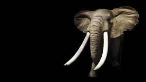

Son animales mamíferos, exclusivamente herbívoros cuya característica principal además del gran tamaño es su larga trompa y sus enormes orejas. Se organizan en manadas de unos 20 miembros, miden casi 4 metros los ejemplares más grandes y pueden llegar a pesar más de 6.000 kilos. Suelen vivir alrededor de 70 años y tienen el periodo de gestación más largo de todos los animales: 22 meses. Nada más nacer, las crías ya pesan más de 100 kilos. Debido a su gran tamaño, tienen también un cerebro muy grande por lo cual son animales muy inteligentes a los que se asocian comportamientos como el duelo por una pérdida, la asociación con otros miembros, el uso de herramientas, la adopción, el juego e incluso el autorreconocimiento. Las orejas de los elefantes actúan como termostato ayudando a soportar el fuerte calor de las zonas donde habitan y su trompa en realidad no es más que una nariz muy desarrollada que también usan como un brazo largo. Los colmillos los usan para buscar comida y agua y son uno de los motivos por los que esta especie se
Sigue con curiosidades del elefante de la sabana

El elefante africano de sabana (Loxodonta africana) es el mamífero terrestre más grande del mundo y la mayor de las tres
especies de elefantes existentes. Los ejemplares adultos pueden alcanzar los 4 metros de altura y pesar hasta 6 toneladas.
Como herbívoros, pasan gran parte del día buscando comida, pues se calcula que necesitan comer unos 160 kilos de vegetación
al día. Pero estos animales majestuosos están desapareciendo como consecuencia de la caza furtiva y la desaparición del
hábitat. Mostramos aquí algunas peculiaridades de estos gigantes de la sabana.
Una de las características más destacadas de los elefantes de sabana es, sin duda, su enorme trompa y sus grandes orejas.
Las orejas miden unos 183 centímetros de largo por 114 centímetros de ancho, mucho más grandes que las del elefante asiático,
que solo alcanzan los 60 centímetros de largo. El gran tamaño de las orejas es de gran ayuda a la hora de regular la tempera
tura corporal.
Para más información: